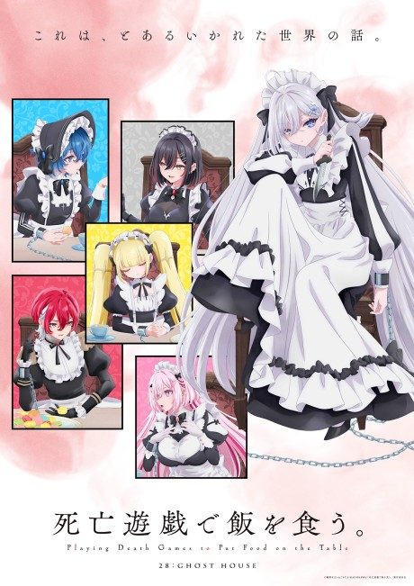
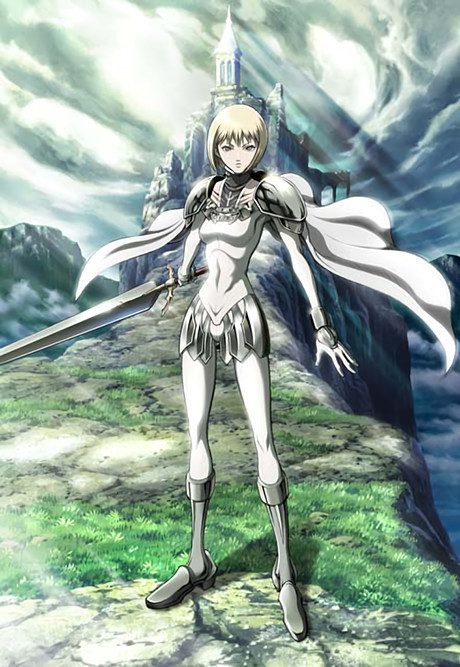

Princess Principal
プリンセス・プリンシパル
In a 19th-century London divided by a wall, five schoolgirls work as spies.
An original anime, so there's no book to continue with.
7.5AniList score
—Animeter, no votes yet
12episodes
Rate it or report where you stopped
Is there a manga to continue?
StatusOriginal
An anime original, so there is no manga to pick up from.
Sources: AniList, MyAnimeList
More like Princess Principal
 Original7.4
Original7.4
 Film8.5
Film8.5
 Done7.6
Done7.6
 Original7.3
Original7.3

Manga Vol. 37.1 Manga Ch. 248.5
Manga Ch. 248.5
Original7.6
Michiko & Hatchin Done7.5
Done7.5
 Manga Vol. 107.3
Manga Vol. 107.3

Manga Ch. 577.4 Original8.3
Original8.3
 Manga Ch. 1018.7
Manga Ch. 1018.7